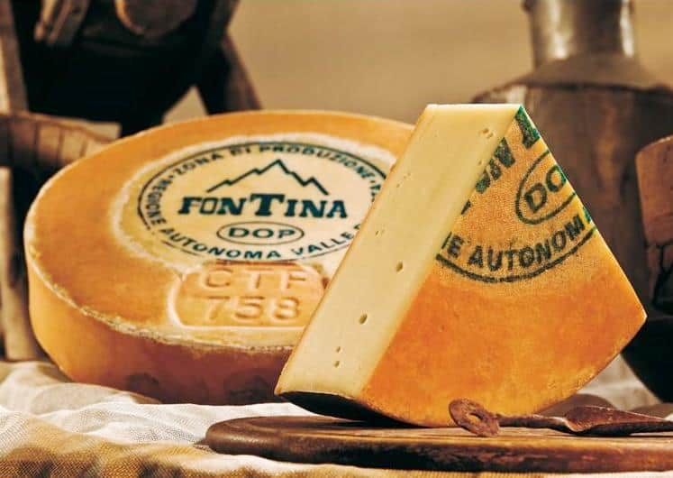
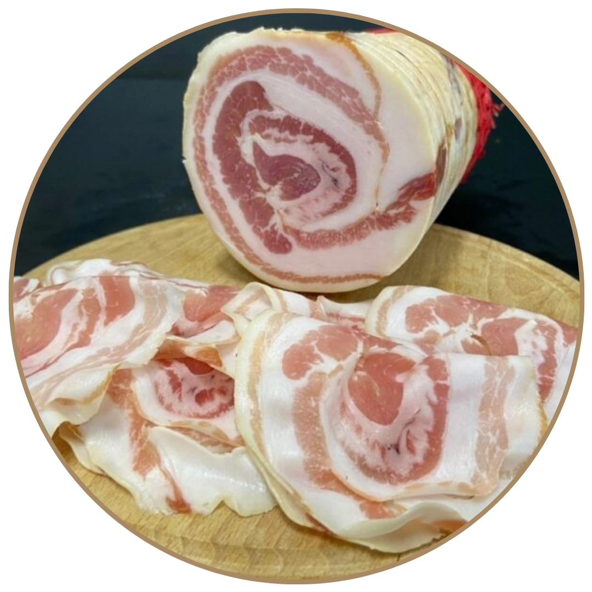

Catalogo Prodotti
Scopri i nostri formaggi e salumi locali (1-12 di 20)

Assortimento salumi e formaggi
Selezione mista ideale per taglieri e aperitivi.
€12,50 a vassoio
Bitto
Formaggio stagionato dal gusto intenso.
€16,90/kg

Bra DOP
Classico piemontese, tenero e saporito.
€11,90/kg

Caprino
Caprino morbido, perfetto da tavola o da spalmare.
€13,50/kg

Castelmagno DOP
Formaggio di montagna, stagionato in grotta.
€19,90/kg

Crudo di Cuneo
Prosciutto crudo tipico della provincia di Cuneo.
€21,90/kg

Fontina
Formaggio valdostano dal cuore morbido.
€14,50/kg

Formaggi piemontesi assortiti
Selezione di DOP piemontesi per ogni gusto.
€15,90/kg

Pancetta
Pancetta arrotolata, ideale per cucina e panini.
€9,90/kg
Prosciutto cotto
Cotto scelto, alta qualità per tutti i giorni.
€12,90/kg
Salame Piemontese
Salame tradizionale, macinatura fine e gusto deciso.
€8,90/kg
Tagliere di salumi
Mix di specialità del banco, pronto da servire.
€18,00 a tagliere